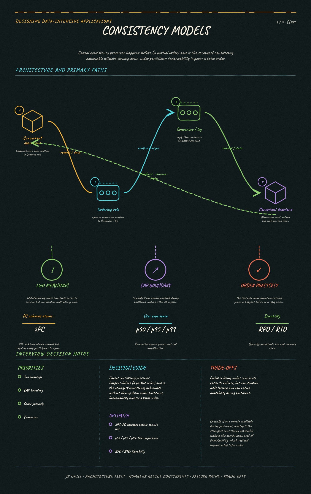

https://frosty110.github.io/js-drill/assets/system-design/infographics/ddia/ch09/consistency-models.pngThe strongest correctness guarantees for distributed systems and what they cost. Covers linearizability (single-object recency) and how it differs from serializability, causal ordering versus total ordering, total order broadcast, two-phase commit for atomic commit, and fault-tolerant consensus (Raft/Paxos/Zab) and the coordination services built on it.
All questions, model answers and diagrams for Consistency and Consensus →